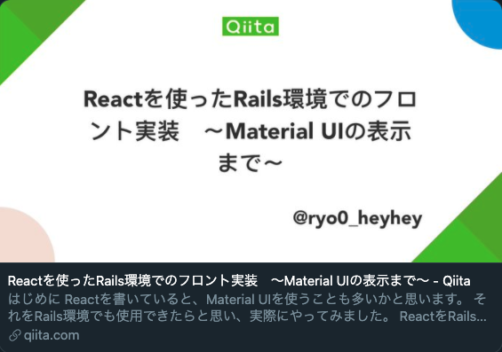

About me
初めまして。
自己紹介
- 1992年12月生まれ / 27歳
- 育ちは神奈川県で、現在は岡山県に在住しております。
経歴
- ・2015年3月 : 中央大学 商学部 商業・貿易学科 卒業
- ・2015年4月 : 内資系製薬企業 就職（MR職）
【日頃の取り組み】
現職での主な業務内容は医師をはじめとした医療従事者への医薬品情報の提供です。
昨今のITの進歩により、医薬品情報へのアクセスが格段にしやすくなり、インターネットで取れる基本的な医薬品情報では顧客ニーズに応えることが難しくなりました。
このような環境変化の中、論文を読み込んだり、月に1回社内で勉強会を主催したり、時には有給を活用して学会に足を運び、積極的に最新の情報を仕入れていました。
その結果、顧客との中長期的な信頼関係の構築に繋がったこともあります。
【成果】
2019年度新製品売上ランキング9/992位 営業所2/95位
2018年度市場大先で前年比500%達成
新製品プロモーター（情報発信業務メイン）として支店内最高評価
新製品プレゼンテーション大会最優秀賞獲得
このような経験より、率先した行動や周囲を巻き込んだ活動が成果に結びついた時、
仕事へのやりがいや充実感を覚えます。
【エンジニアとして活かしたい強み】
◇行動力
とにかくやってみることを念頭に、最近でもconnpassイベントや、ハッカソンに参加し人生で初めてのLTを経験、他にもいくつかアプリを作成し公開、Qiita記事投稿等、チャレンジを重ねてきました。
◇発信する姿勢
上記に記載したLTやQiita投稿以外にも、現職での新製品PM（情報発信業務メイン）の経験では、自ら情報を集め、メンバーが活用できる形で発信を続けていた結果、支店内最高評価をいただきました。
◇挫折してもやり切る力
現職にて新製品大口先（300万/年）で採用が取り消しになってしまい、実績を巻き返す目標を掲げ、結果400万/年の実績確保、営業所ランキング2/95位、個人9/992位を達成しました。
◇コミュニケーション力
現職での顧客折衝経験に加え、チームリーダー経験があり、メンバーの目線を合わせる為にコミュニケーションをとり、チーム力の向上にも努めました。
◇継続力
プログラミング学習記録をTwitterにて約半年毎日欠かすことなく更新しております。
現職での主な業務内容は医師をはじめとした医療従事者への医薬品情報の提供です。
昨今のITの進歩により、医薬品情報へのアクセスが格段にしやすくなり、インターネットで取れる基本的な医薬品情報では顧客ニーズに応えることが難しくなりました。
このような環境変化の中、論文を読み込んだり、月に1回社内で勉強会を主催したり、時には有給を活用して学会に足を運び、積極的に最新の情報を仕入れていました。
その結果、顧客との中長期的な信頼関係の構築に繋がったこともあります。
【成果】
2019年度新製品売上ランキング9/992位 営業所2/95位
2018年度市場大先で前年比500%達成
新製品プロモーター（情報発信業務メイン）として支店内最高評価
新製品プレゼンテーション大会最優秀賞獲得
このような経験より、率先した行動や周囲を巻き込んだ活動が成果に結びついた時、
仕事へのやりがいや充実感を覚えます。
【エンジニアとして活かしたい強み】
◇行動力
とにかくやってみることを念頭に、最近でもconnpassイベントや、ハッカソンに参加し人生で初めてのLTを経験、他にもいくつかアプリを作成し公開、Qiita記事投稿等、チャレンジを重ねてきました。
◇発信する姿勢
上記に記載したLTやQiita投稿以外にも、現職での新製品PM（情報発信業務メイン）の経験では、自ら情報を集め、メンバーが活用できる形で発信を続けていた結果、支店内最高評価をいただきました。
◇挫折してもやり切る力
現職にて新製品大口先（300万/年）で採用が取り消しになってしまい、実績を巻き返す目標を掲げ、結果400万/年の実績確保、営業所ランキング2/95位、個人9/992位を達成しました。
◇コミュニケーション力
現職での顧客折衝経験に加え、チームリーダー経験があり、メンバーの目線を合わせる為にコミュニケーションをとり、チーム力の向上にも努めました。
◇継続力
プログラミング学習記録をTwitterにて約半年毎日欠かすことなく更新しております。
Ruby on Rails
独学開始後初めて制作したアプリです。
アプリ概要・制作背景
- 作品名：DIYなう
- アプリ概要：住宅におけるDIYやリフォームの作品をコメント付きで投稿できるアプリです。
- 作成背景：DIY好きの方々と接した際、仲間意識の強さを感じたことがあり、それぞれご自身のブログでアウトプットしている光景が印象的でした。 そんな方々がSNS感覚で繋がれたらと思い、作成に取り掛かりました。
ソースコード
使用技術等
- ・コメント機能付きCRUD実装
- ・deviseを使用しメール認証機能を実装しました
- ・画像投稿機能にはrefileを使用
- ・AWSでデプロイ
- ・いいね機能はajaxを用いております
React
シンプルなTodoアプリです。
アプリ概要・制作背景
- 作品名：#今日の積み上げ
- アプリ概要：Todoリストを作成し、Twitterにハッシュタグ付きで宣言できるアプリです。
- 作成背景：作成の過程でReactの基礎を学びたかったことと、日々のTwitterでの学習宣言・報告をアプリからそのままツイートできるようにしたくなり、作成しました。
ソースコード
使用技術等
- ・CRUD + Twitter投稿機能を実装
- ・DBはFirebaseのCloudFirestoreを使用
- ・認証はFirebaseのFirebase Authenticationを使用
- ・スマホでも操作可能なようにUIを調整しております
- ・Firebaseでデプロイ
- ・今後はユーザーごとのリストになるように仕様変更予定
JavaScript
漫才風タイピングゲームです。
アプリ概要・制作背景
- 作品名：Typing Manzai Game
- アプリ概要：漫才を楽しみながらタイピング速度を速くできるゲームです。
- 作成背景：基本的なDOM操作をアウトプットしたく作成し始め、どうせならJavaScriptの理解だけでなく、楽しみながらタイピング速度も上げられるゲームを作りたいと思い作成しました。
ソースコード
使用技術等
- ・HTML + CSS（一部アニメーション）+ JavaScript + jQuertのみ使用
- 【以下ゲーム説明】
- ・クリックしてタイピングしまくる、それだけです！
- ・審査員は漫才が面白くなければ100点をくれません。
- ・100点を出すには漫才が成り立つ必要があります。
- ・漫才が成り立つかどうかはランダムなので、とにかく速いタイピングがクリアの鍵を握ります。
ハッカソンでの成果物
Rails上でReactを動作させてみました。
アプリ概要・制作背景
- 作品名：React on Rails
- アプリ概要：webpackerを用いてRails上でReactの動作まで実施し、過程をQiitaにアウトプット
- 作成背景：GWでオンラインサロン上で開催された5日間のハッカソンに参加しました。これまでの学習を紐づけたかったことと、Material-UIをRails上でも表示をしてみたいという好奇心もあり、制作に取り掛かりました。
ソースコード
使用技術等
- ・webpackerを用いたRails上でのReact使用
- ・Qiita記事ではMaterial-UIをRails上で動作まで実施
- ・人生初のLTも経験しました
- ・今後RailsはAPIとしてReactと別々にアプリを作成予定
↓Qiita投稿

学習継続
日々精進して参ります。
Twitterでの学習記録
- 2020年1月より、休むことなく学習記録を更新しております
- 少しでも現場でお役に立てるよう、今後も学習を継続していきます